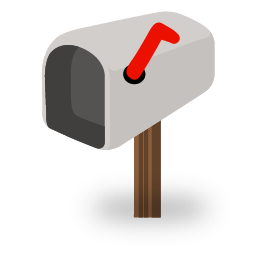
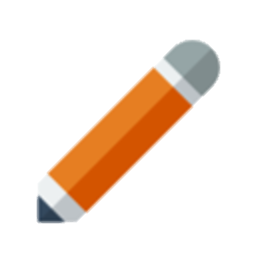

<!DOCTYPE html>
<head>
    <meta charset="utf-8">
    <meta name="viewport" content="initial-scale=1, maximum-scale=1, user-scalable=no, width=device-width">
    <script src="../lib/jquery-2.2.3.min.js"></script>
    <!-- ionic -->
    <script src="../lib/ionic-v1.2.4/js/ionic.bundle.js"></script>
    <link href="../lib/ionic-v1.2.4/css/ionic.css" rel="stylesheet">
    <!-- cordova script (this will be a 404 during development) -->
    <script src="../cordova.js"></script>
    <script src="../lib/pouchdb-5.4.1.js"></script>
    <script src="../lib/raphael-min.js"></script>
    <!--Calendar-->
    <script src="../lib/moment/min/moment.min.js"></script>
    <script src="../lib/fullcalendar-2.9.0/fullcalendar.min.js"></script>
    <link rel='stylesheet' href='../lib/fullcalendar-2.9.0/fullcalendar.min.css' />
    <!--My Scripts-->
    <script src="../js/app.js"></script>
    <script src="../js/controllers.js"></script>
    <link href="../css/style.css" rel="stylesheet">
</head>
<body ng-app="momlink" ng-controller="HeaderCtrl" ng-init="backButtonListener(); clickListener(); removeSplash(); renderArticlesHeader();">
    <ion-side-menus>
        <ion-side-menu-content drag-content="false">
            <ion-header-bar align-title="middle" class="bar-positive" ng-controller="HeaderCtrl">
                <div class="buttons">
                    <button class="button button-icon icon ion-ios-home" ng-click="toNewPage('home.html', 'Momlink')"></button>
                </div>
                <h1 class="title" id="headline">Momlink</h1>
                <div class="buttons">
                    <button class="button button-icon" ng-click="toggleRightSideMenu()"><i id="menuIcon" class="icon ion-navicon-round"></i></button>
                </div>
            </ion-header-bar>
            <div id="content">
                <ion-pane>
                    <ion-subheader-bar id="subheader" class="bar bar-subheader" ng-init="renderSubheaderDate()">
                        <h2 class="title" id="todaysDate"></h2>
                    </ion-subheader-bar>
                    <ion-view>
                        <ion-content overflow-scroll="true" class="has-header has-subheader" ng-init="renderAppointmentsHeader();renderBadges();">
                            <ion-slides style="height:30%; background-color:deeppink;">
                                <ion-slide-page>
                                    <div id="appointmentsHeader" class="centerWhite"></div>
                                </ion-slide-page>
                                <ion-slide-page>
                                    <div id="articlesHeader" class="centerWhite"></div>
                                </ion-slide-page>
                            </ion-slides>
                            <center>
                                <div class="row">
                                    <div id="inbox" class="col" style="position:relative"><p>Inbox</p></div>
                                    <div id="calendar" class="col" style="position:relative"><p>Calendar</p></div>
                                    <div id="referrals" class="col" style="position:relative"><p>Referrals</p></div>
                                </div>
                                <div class="row">
                                    <div id="education" class="col" style="position:relative"><p>Education</p></div>
                                    <div class="col"><p>Track</p></div>
                                    <div id="survey" class="col" style="position:relative"><p>Survey</p></div>
                                </div>
                                <button ng-click="inspectDB()">Show DB</button>
                                <button ng-click="testPHP()">Test PHP</button>
                                <button ng-click="sendLog()">Finish Tasks</button>
                            </center>
                        </ion-content>
                    </ion-view>
                </ion-pane>
            </div>
        </ion-side-menu-content>
        <ion-side-menu side="right" style="background-color: #f2f2f2;">
            <div class="list">
                <a class="item item-icon-left" ng-click="toNewPage('inbox.html', 'Inbox');toggleRightSideMenu()"><i class="icon ion-email"></i>Inbox</a>
                <a class="item item-icon-left" ng-click="toNewPage('calendar.html', 'Calendar');toggleRightSideMenu()"><i class="icon ion-calendar"></i>Calendar</a>
                <a class="item item-icon-left" ng-click="toNewPage('referrals.html', 'Referrals');toggleRightSideMenu()"><i class="icon ion-ios-people"></i>Referrals</a>
                <a class="item item-icon-left" ng-click="toNewPage('education.html', 'Education');toggleRightSideMenu()"><i class="icon ion-folder"></i>Education</a>
                <a class="item item-icon-left" ng-click="toNewPage('track.html', 'Track');toggleRightSideMenu()"><i class="icon ion-edit"></i>Track</a>
                <a class="item item-icon-left" ng-click="toNewPage('survey.html', 'Surveys');toggleRightSideMenu()"><i class="icon ion-clipboard"></i>Surveys</a>
                <a class="item item-icon-left" ng-click="toNewPage('goals.html', 'Goals');toggleRightSideMenu()"><i class="icon ion-checkmark-round"></i>Goals</a>
                <a class="item item-icon-left" ng-click="toNewPage('journal.html', 'My Journal');toggleRightSideMenu()"><i class="icon ion-ios-bookmarks"></i>Journal</a>
                <a class="item item-icon-left" ng-click="toNewPage('myProfile.html', 'My Profile');toggleRightSideMenu()"><i class="icon ion-person"></i>My Profile</a>
                <a class="item item-icon-left" ng-click="update()"><i class="icon ion-loop"></i>Update</a>
                <a class="item item-icon-left" ng-click="logout()"><i class="icon ion-locked"></i>Logout</a>
            </div>
        </ion-side-menu>
    </ion-side-menus>
</body>